오늘의 한 문장
책에서 만난 오늘의 한 문장을 여백 있게 담는 카드

독서 목표
이번 달·올해의 독서 목표를 체크리스트와 스티커로 정리하는 노트 카드

완독 대출카드
완독한 책을 도서관 대출카드처럼 기록하는 카드. 완독 도장까지 찍어드려요

인상 깊은 구절
마음을 울린 구절을 노트 위에 손글씨로 적고, 사진을 폴라로이드로 붙이는 카드
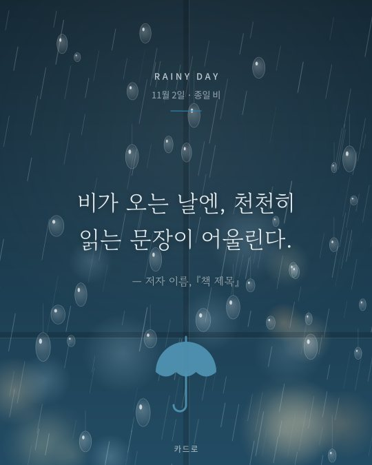
비 오는 날의 문장
빗방울 맺힌 창가 분위기에 비 오는 날 읽은 문장을 담는 카드
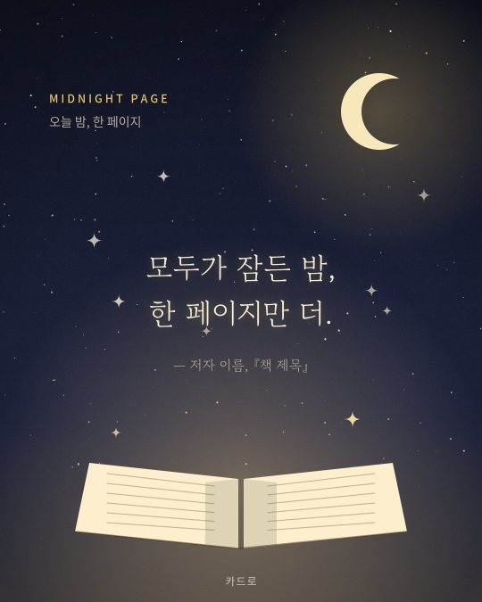
밤에 읽은 한 페이지
달과 별이 뜬 밤하늘 아래, 늦은 밤 읽은 한 페이지의 여운을 담는 카드

이 책의 키워드 3
책의 핵심을 키워드 3개와 한 줄 요약으로 정리하는 카드. 표지 사진도 올릴 수 있어요

이번 달 읽은 책
한 달 동안 읽은 책을 책등이 보이는 책장으로 정리하는 월말 결산 카드

독서 진행률
읽은 비율을 큰 링 그래프로 보여주고, 7일 독서 습관까지 기록하는 카드

이 책을 읽는 이유
책을 선택한 이유와 기대를 정리하는 카드
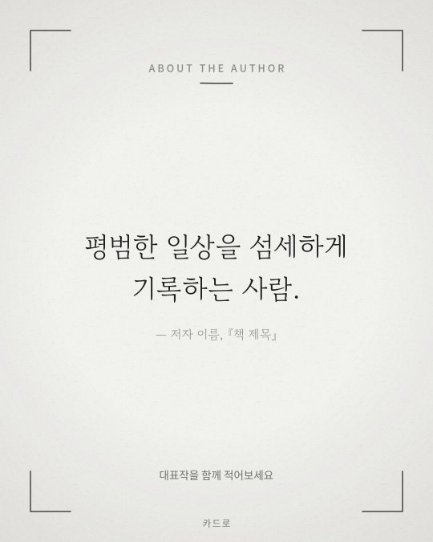
저자 소개 카드
저자 이름과 대표작, 짧은 소개를 담는 카드
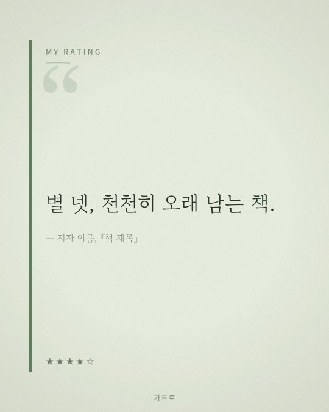
나만의 별점
책에 대한 별점과 한줄 소감을 담는 카드

책 제목 소개
책 제목과 저자를 심플하게 소개하는 카드
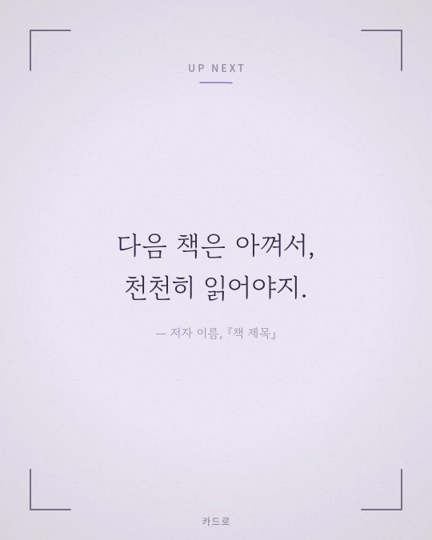
다음에 읽을 책
다음에 읽을 책을 예고하는 카드
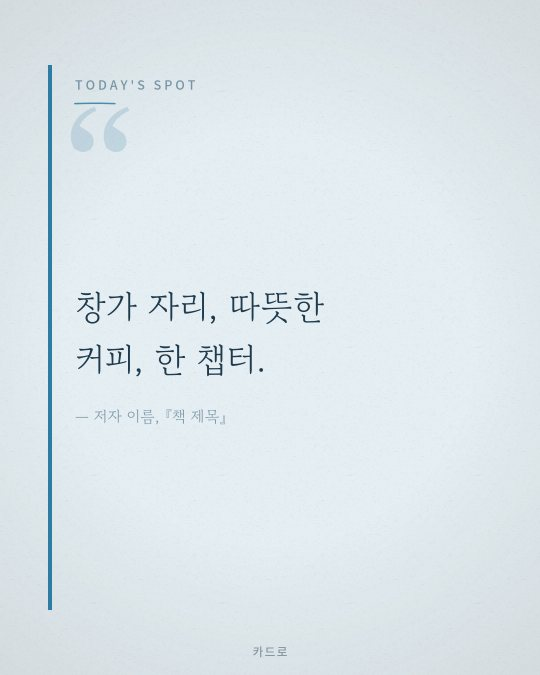
오늘 책 읽은 장소
오늘 책을 읽은 장소와 분위기를 담는 카드

이 책을 한 줄로 정의하면
이 책을 한 문장으로 정의하는 카드

오늘의 한 문장
오늘의 문장을 세로 풀스크린으로 담는 스토리 전용 카드

밑줄 친 문장
책을 읽으며 밑줄 그은 문장을 기록하는 카드

독서 후 소감
책을 다 읽은 후의 감상을 담는 카드
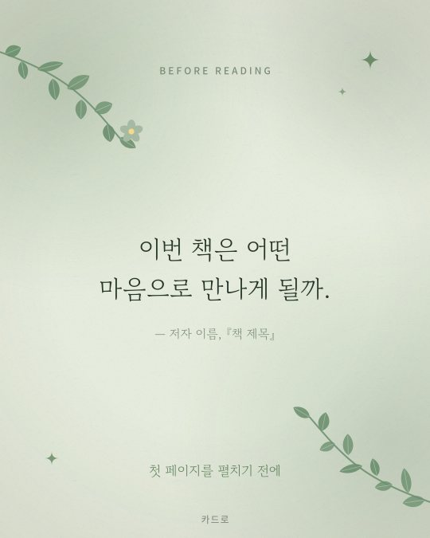
독서 전 다짐
책을 펼치기 전의 설렘과 다짐을 담는 카드

책 속 명언
책 속에 담긴 명언을 큰 타이포로 강조하는 카드
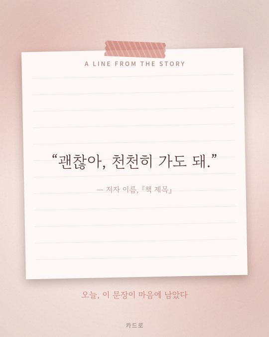
인물의 대사
소설 속 인물의 대사를 인용하는 카드

다시 읽고 싶은 문장
다시 읽고 싶은 문장을 담는 카드
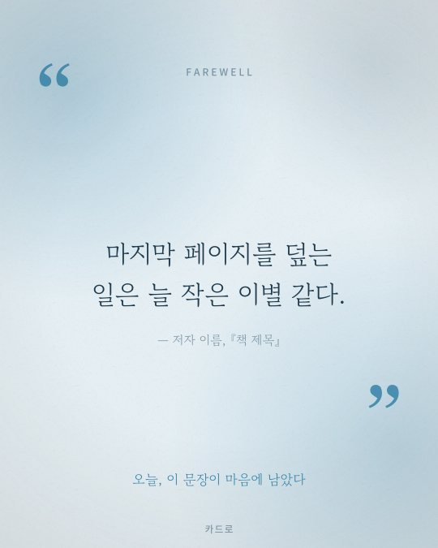
책과의 작별
책과의 이별, 완독 후 여운을 담는 카드

인상 깊은 구절
인상 깊은 구절을 세로 풀스크린으로 담는 스토리 전용 카드

한줄평
책에 대한 한줄평을 정보형 레이아웃으로 정리하는 카드

오늘 읽은 페이지
오늘의 독서 진행 상황을 도표로 보여주는 카드

이 책을 추천하는 이유
책을 추천하는 이유를 항목별로 정리하는 카드
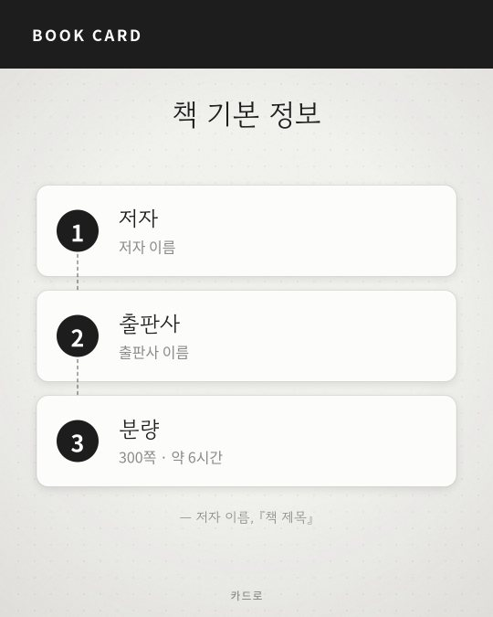
책 기본 정보
저자·출판사·페이지 수 등 책 기본 정보를 정리하는 카드
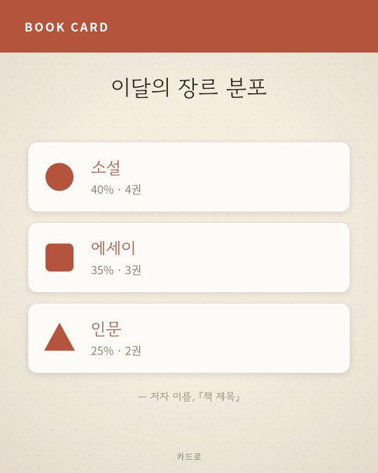
이달의 장르 분포
이번 달 읽은 책의 장르 비율을 정리하는 카드
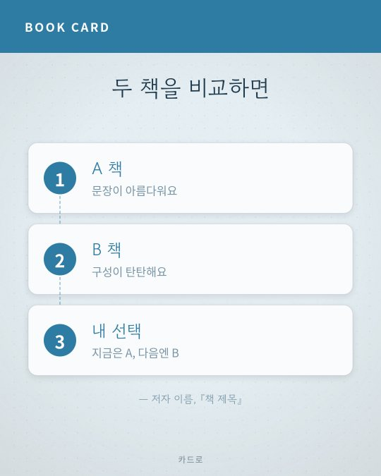
두 책 비교
두 책을 나란히 비교하는 카드

독서 시간 기록
하루 독서 시간을 기록하는 카드

이 책의 키워드 3
책의 핵심 키워드를 세로 풀스크린으로 보여주는 스토리 전용 카드
자주 묻는 질문
카드로는 어떤 사이트인가요?
카드로는 독서 카드뉴스 템플릿 33종을 브라우저에서 직접 편집해 PNG나 ZIP으로 내려받는 무료 사이트예요. 글, 책 제목, 사진, 색상, 글꼴을 바꿀 수 있고 인스타그램 피드용(4:5)과 스토리용(9:16) 규격을 모두 지원해요.
가입이나 비용이 필요한가요?
회원가입 없이 무료로 사용할 수 있어요. 사이트 운영을 위해 광고가 표시될 수 있어요.
입력한 글과 사진이 서버로 전송되나요?
아니요. 편집과 이미지 생성은 모두 이용자의 브라우저 안에서 이루어지고, 입력한 글과 사진은 서버로 전송되지 않아요. 작성 중인 글은 이 브라우저에만 자동 저장되며 사진은 저장되지 않아요.
이미지는 어떤 크기로 저장되나요?
카드 템플릿은 1080×1350px(4:5), 스토리 템플릿은 1080×1920px(9:16) PNG로 저장돼요. 여러 장을 만든 경우 ZIP 파일로 한 번에 받을 수 있어요.
만든 이미지를 SNS나 블로그에 써도 되나요?
개인 SNS, 블로그, 독서모임 자료 같은 개인적·비상업적 용도로 자유롭게 쓸 수 있어요. 템플릿 원본 디자인의 재배포나 판매는 금지돼요. 책의 문장이나 사진 등 타인의 저작물을 넣을 때는 출처를 밝히고 권리를 침해하지 않도록 주의해 주세요.
스마트폰에서도 사용할 수 있나요?
네, 최신 모바일 브라우저에서 사용할 수 있도록 화면에 맞춰 만들었어요. 사진은 갤러리에서 바로 골라 올릴 수 있어요.